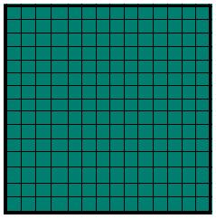
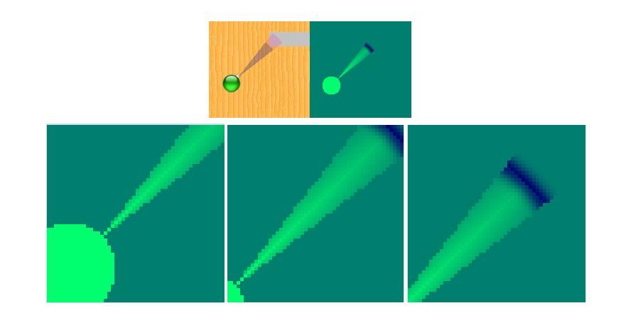
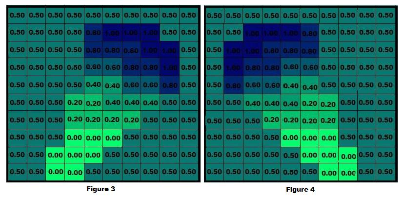
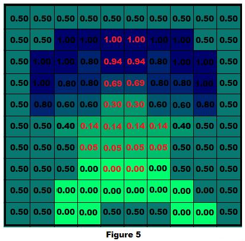

Computer Science & Engineering Mobile RoboticsList Of Experiments
Mapping
Herein we describe the mapping algorithm which integrates multiple readings into the probabilistic framework that models the sensor noise or sensor errors. For the sake of keeping this article simple but conveying what it needs to convey we skip steps in the derivation but essentially convey it from an algorithmic standpoint, a standpoint we hope would enable the reader to immediately code the algorithm.
The Mapping Algorithm:
The mapping algorithm works in the following fashion. The map is divided into a rectangular array of cells and initially all cells have a probability of 0.5, indicating that the cell could be occupied or unoccupied to an equal probability, since in the beginning the robot does not know anything about the environment in which it is. A probability value greater than 0.5 indicates the cell has more chances of being occupied than unoccupied by an obstacle. Similarly a probability of less than 0.5 indicates that the cell has lesser probability of being occupied than unoccupied. In figure1 the initial state of the map is shown with all cells shaded in gray green indicating that the state of the cell is unknown regarding its occupancy or non-occupancy. This corresponds to the probability of 0.5 for each cell. Darker shades of gray green indicate probabilities more than 0.5 or higher occupancy and lighter shades indicate probabilities less than 0.5 or higher non-occupancy.
 
Figure1: Gray green map with 0.5 as the probability and Color shades for different probability values
The starting coordinates of the robot are considered to be (0,0) or the origin or any other point (x,y). This and the cells surrounding it which are occupied by the robot are certainly not occupied by an obstacle and hence they have an occupancy probability of 0 and are depicted in light green. The robot then takes a scan of the environment through its sensors. The scan could be composed of one or multiple range readings, for the sake of simplicity in illustration we consider single reading scans. Since the reading is noisy it is modelled through a probability density function as described in the Virtual Lab for sensor models. One such sonar reading and the probability of the cells which come under the influence of this reading is shown in figure 2.

Figure2: Shows a figure of a ray hitting an obstacle, probability values for the cells which come under the cone updated in terms of color shades.
As seen in figure 2 cells close to the middle ray of the cone and cells near the actual distance reported by the sensor have higher probability values while cells further away from the median ray and those closer to the robot and within the cone have lower probability values. The corresponding color code based depiction of these cells with lighter and darker shades of gray green are shown in the figure 1.
Let us denote the occupancy probability of one such cell, i, by pti and its non occupancy probability by p"ti such that pti+p"ti=1 . The subscript t refers to the time instant t at which the reading was obtained and superscript i refers to the cell index. In all the following figures, values in the grids/cells only represent pti.

At time instant t+1 the robot moves to a new location and obtains a scan from this location. The robot location at t+1 the scan and its corresponding probability values is shown in figure 4. Now parts of this scan overlap with the cells updated by the scan at the previous instant. The probability values for these cells need a new update. These are computed as pt+1i = ptipt+1i and p"t+1i = p"tip"t+1i after which the values are again normalized so that pt+1i+p"t+1i =1. Thus after normalization the grid values would be updated as per the Figure 5, where the overlapping grids of pti, pt+1i are with their values marked in red font.

The results of these operations on the cells are shown in figure 5. The robot thus travels around obtaining newer readings and integrating them into the probability framework. A final occupancy map for an environment such as the one in figure 6 would look like figure 7 for individual scans and would look as the one in figure 8 when overlapping is carried out for scanning at various positions.